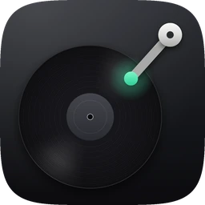
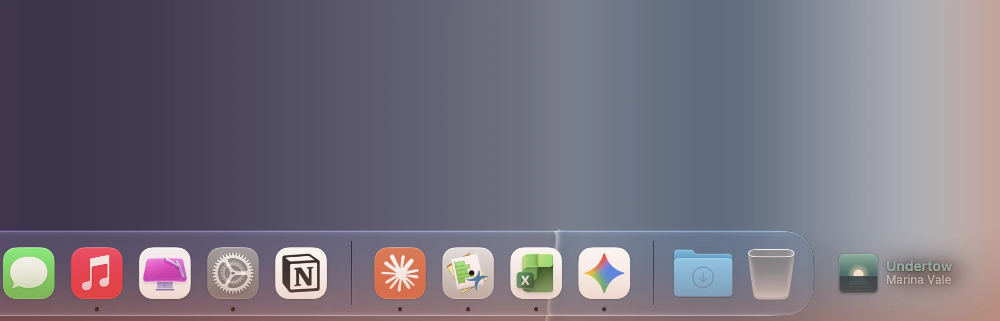
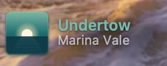
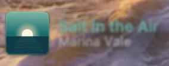
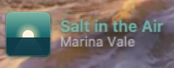
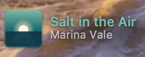
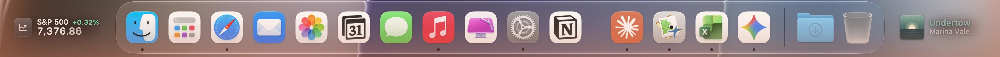
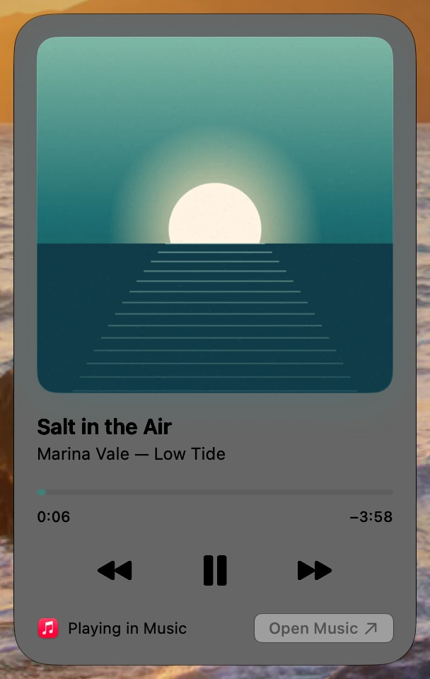
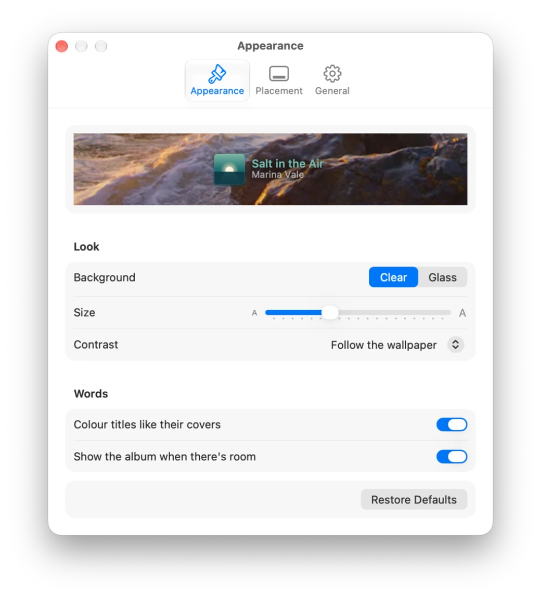

Needle
What’s playing, beside the Dock.
Homebrew:

- The cover in the corner. The album art beside the Dock, with a soft shadow in its own colours. The title takes the cover’s colour.
- Same album, same cover. A new track comes into focus the way a new listing does in Tape. From the same album, only the words change.
- Click, swipe, done. Click the cover to pause, the title to see it large, and swipe with two fingers to skip.
- Fits any Dock. Cover, words and clock on a big screen; beside a long Dock on a laptop, the cover alone.







Built with AppKit, SwiftUI and Core Animation. Needle reads the same Now Playing information as Control Center, so it works with Music, Spotify, Podcasts and browsers. The records in these pictures are made up, and their covers are drawn in code.
Next: AeroCommand